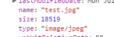
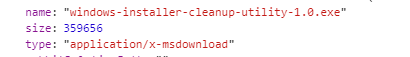
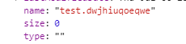

Javascript 笔记 --- 上传
<input type="file">
属性accept=""
accept只是为上传文件的类型提供一个默认的搜索过滤，而不会强制要求必须上传这种类型的文件，可以上传任意的文件且浏览器都会接受
设置accept="video/*"，在上传文件的时候选择“全部文件”。
上传一个jpg文件：

上传一个exe文件：

甚至可以上传一个随便起的后缀文件：

可见当浏览器上传以后，浏览器会自动确定文件的类型，与accept规定的类型无关
accept的值可以是以下：
file_extension文件扩展名，如.gif,.jpg,.png。值得一提的是，如果留空，则上传文件的窗口默认为全部文件。
如果是自定义的后缀如.asd文件，默认过滤出ASD文件
如果定义多个文件，如”.jpg, .png”，上传文件的窗口显示“自定义文件”，但过滤规则一样有效，会过滤出所有的jpg和png文件
audio/*音频文件video/*视频文件image/*图像文件media_typehttp://www.iana.org/assignments/media-types/media-types.xhtml
属性multiple
multiple="multiple"
默认情况下文件只能选一个，设置multiple之后可以选择多个文件
FORMDATA
formdata是可以独立于表单之外的表单数据，可以用来上传二进制文件
使用new FormData()来创建一个formdata对象，然后使用append(name, value, filename)来添加字段。
value可以是blob对象、file对象或者字符串。
如果value既不是blob对象，也不是file对象的话，它就会被转换为字符串
filename是可选的，如果value是blob或file，会被当作文件名来发送到服务器上
formdata无法直接通过console.log()来打印，要想监视formdata的数据，需要使用for(let pair of formdata.entries())，pair是一个数组，0是value，1是file
Blob对象表示不可变的类似文件对象的原始数据。Blob表示不一定是JavaScript原生形式的数据。 File 接口基于Blob，继承了 blob的功能并将其扩展使其支持用户系统上的文件。